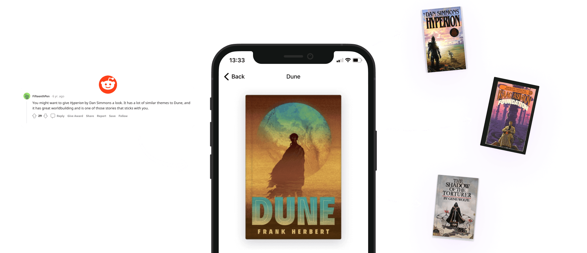
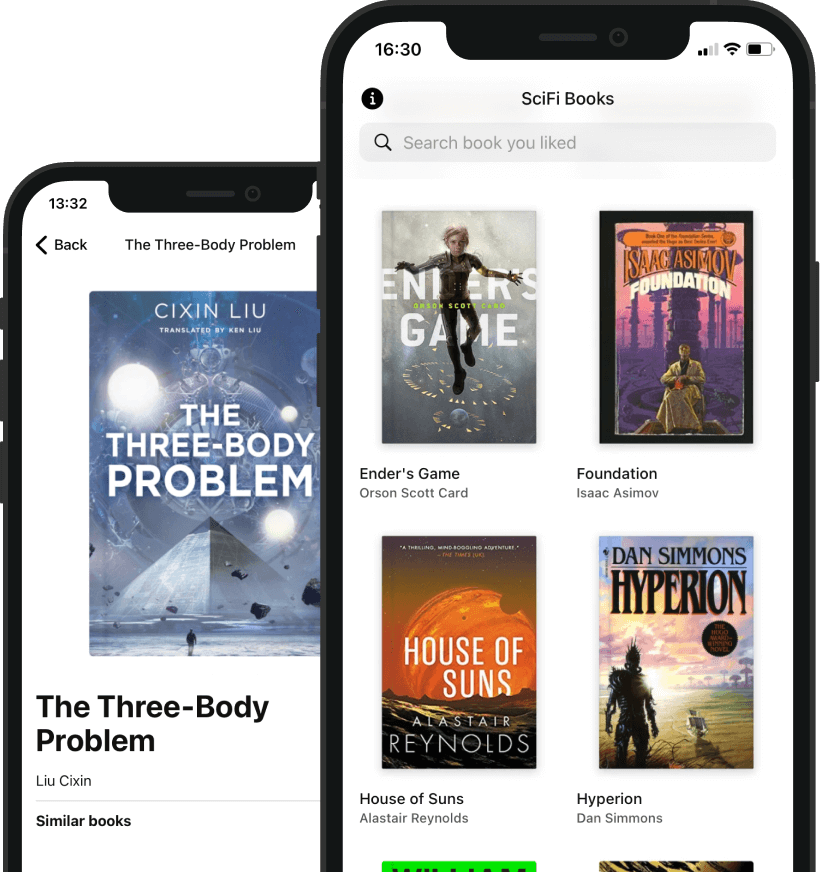
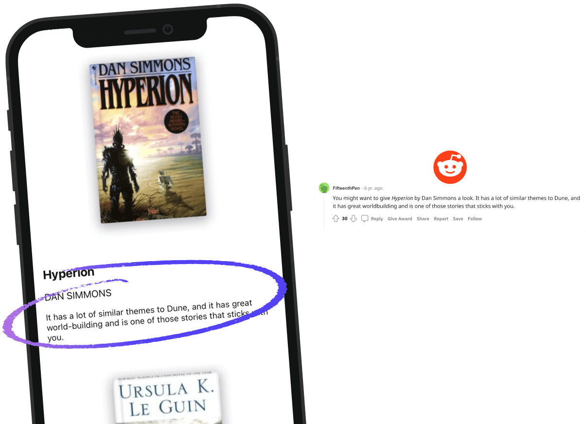
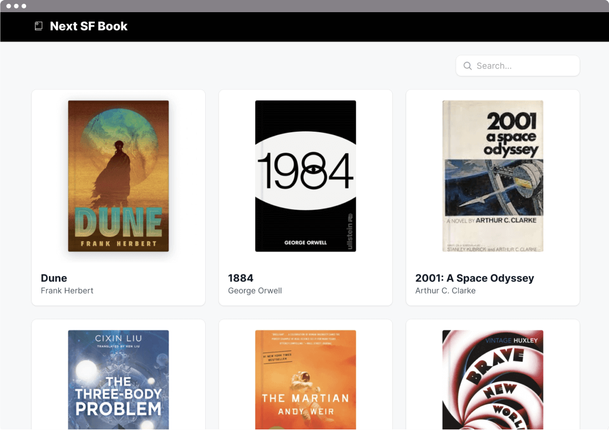

5 SciFi Book suggestions
based on the one you loved
Discover your next book based on recommendations
from the biggest SciFi community in the world
Get the AppHandpicked books for your next read. By SciFi fans
Get similar books based on the same genre, world-building, author, or even writing style.
Mainly PrintSF and SciFi community on Reddit

A short note on WHY.
By other readers
Get a reason why are these books great or a short plot description to get an honest suggestion.

Mobile and Desktop
